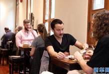

汪洋出席全国性宗教团体负责人迎春座谈会
2月11日，中共中央政治局常委、国务院副总理汪洋在北京出席全国性宗教团体负责人座谈会，共庆新春佳节，并代表中共中央和习近平总书记向全国
发布时间：2018-02-14 来源：新华社
国务院参事室启动首届“新时代新风韵”优秀美术作品展
新华社北京２月２６日电 国务院参事室２６日在京举行新闻发布会，宣布将联合相关单位举办首届“新时代新风韵”优秀美术作品展。一步坚定民族文化自信，激发全国人民对中华传统文化的热爱...
发布时间：2018-02-14 来源：新华社
统战老干部罗广武“16+7”的精彩人生
“我的人生经历很简单，在部队十五年，在党校任哲学教员三年，在中央统战部十六年，工作的最后七年，是在世界屋脊西藏，在这片神奇的高天厚土
发布时间：2018-02-14

新春体验香港茶文化
2月19日，游客在位于香港公园的茶馆乐茶轩体验中国茶文化。春节期间，记者走访了香港的茶轩和茶艺会，体验了茶文化在香港的发展。新华社记者
发布时间：2018-02-14 来源：新华社
郑新立：增强改革的系统性整体性协同性
党的十九大把“着力增强改革系统性、整体性、协同性”作为全面深化改革取得重大突破的一项重要经验，把“更加注重改2018年是贯彻党的十九大精神的开局之年，是改革开放40周年，是决胜全面建成
发布时间：2018-02-14 来源：新华社